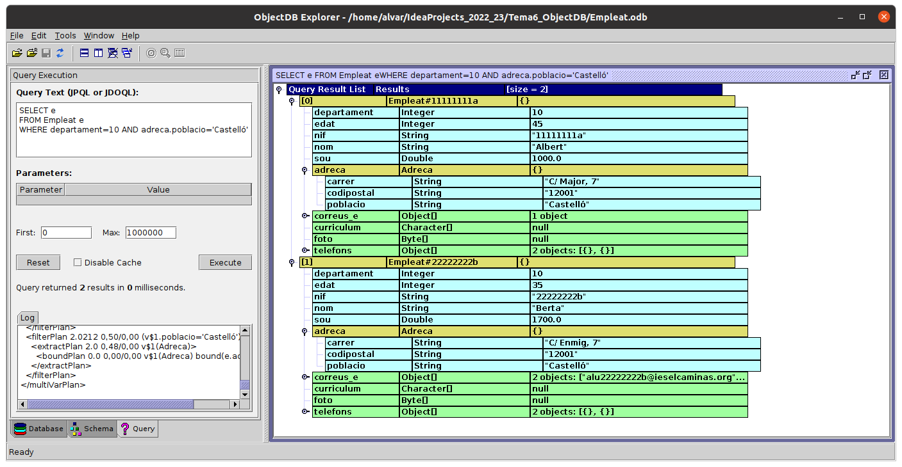

3.4.3 Consultes
Ja havíem comentat que ObjectDB, per basar-se en JPA, podrà utilitzar el llenguatge de consulta JPQL (Java Persistence Query Language), basat en SQL. Per tant tindrem molta més comoditat i potència per a fer les consultes, encara que no arribarà a la potència de SQL
Nota
Si havíeu fet tots els exemples anteriors, potser siga millor esborrar Empleat.odb i tornar a executar Exemple1_InserirEmpleat.kt i Exemple1_1_InserirMesEmpleats.kt per a crear-les de nou.
Com ja vam veure en Hibernate, utilitzarem el mètode query() per a fer una consulta, però el llenguatge és lleugerament diferent. En aquella ocasió utilitzàvem HQL i ara JPQL.
La sentència sempre haurà de contenir la clàusula SELECT. La manera de tornar els objectes serà d'aquesta manera.
SELECT e FROM Empleat e
Per a executar la consulta utilitzarem ara el mètode resultList() de l'objecte Query, que ens tornarà una llista. Però com no hem especificat el tipus que estem buscant (excepte en el propi text de la consulta), el tipus base serà Any, la qual cosa ens obliga a fer un cast.
Copieu el següent codi al fitxer Exemple11_Consulta1.kt:
import classesEmpleat.Empleat
import javax.persistence.Persistence
fun main(){
val bd = Persistence.createEntityManagerFactory("Empleat.odb").createEntityManager()
val q = bd.createQuery("SELECT e FROM Empleat e")
for (e in q.resultList) {
e as Empleat
println("Nif: " + e.nif + ". Nom: " + e.nom + ". Departament: " + e.departament + ". Població: " + e.adreca?.poblacio
)
}
bd .close()
}El mètode createQuery() admet un segon paràmetre per a especificar la classe que tornarà la consulta, cosa que fa més senzilla la utilització.
Copieu el següent codi al fitxer Exemple12_Consulta2.kt:
import classesEmpleat.Empleat
import javax.persistence.Persistence
fun main(){
val bd = Persistence.createEntityManagerFactory("Empleat.odb").createEntityManager()
val q = bd.createQuery("SELECT e FROM Empleat e", Empleat::class.java)
for (e in q.resultList)
println("Nif: " + e.nif + ". Nom: " + e.nom + ". Departament: " + e.departament + ". Població: " + e.adreca?.poblacio)
bd .close()
}La consulta JPQL admetrà SELECT, WHERE, GROUP BY, HAVING, ORDER BY...
I per a poder provar-les podem utilitzar el explorer.sh, en la pestanya Querys, baix a l'esquerra
En la imatge s'han triat els empleats del departament 10 i que viuean a Castelló (la població de l'adreça és Castelló). Sense problemes, amb la sintaxi lògica:

I el programa que executaria aquesta consulta seria el següent. Copieu el següent codi al fitxer Exemple13_Consulta3.kt
import classesEmpleat.Empleat
import javax.persistence.Persistence
fun main(){
val bd = Persistence.createEntityManagerFactory("Empleat.odb").createEntityManager()
val q = bd.createQuery("SELECT e " +
"FROM Empleat e " +
"WHERE departament=10 AND adreca.poblacio='Castelló'"
, Empleat::class.java)
for (e in q.resultList)
println("Nif: " + e.nif + ". Nom: " + e.nom + ". Departament: " + e.departament + ". Població: " + e.adreca?.poblacio)
bd .close()
}Llicenciat sota la Llicència Creative Commons Reconeixement NoComercial CompartirIgual 2.5